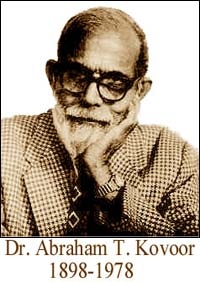
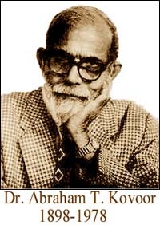

El Dr. Abraham T. Kovoor fue un librepensador, racionalista y psiquiatra de Kerala, Sur de India, quien luego pasó su vida en Sri Lanka. Fue el presidente de la Asociación Racionalista de Sri Lanka, y un escéptico muy prominente con quien tuve correspondencia frecuentemente en las épocas pre-fax y pre-e-mail. Infortunadamente para mí, nunca pude conocer al caballero.
Reproduzco aquí, de El Escéptico Indio - periódico del Comité Indio para la Investigación Científica de Afirmaciones Paranormales - con el cordial permiso del Comité - un intercambio de correspondencia que examina un supuesto milagro de Sathya Sai Baba. Este “milagro” es uno de los que me presentó un seguidor americano de Sai Baba hace pocos meses, en una de mis conferencias. Ahora, treinta años después de esta exposición concluyente del milagro como una historia fabricada, uno podría pensar que los creyentes en este improbable hombre-dios tendrían serias dudas acerca de su divinidad, pero aparentemente no. El devoto que me comentó con desdén esta maravilla como un ejemplo prueba, saboreó su victoria imaginaria…
El Dr. Kovoor escribió:
Fui invitado a dar una conferencia en el Instituto Indio de Tecnología en Guindy. Durante una conversación previa a la lectura, uno de los profesores en el instituto me dijo que la mayoría de los jóvenes que tomaban el estudio de la ciencia y la tecnología lo hacían no porque tuvieran alguna actitud o aptitud científicas, sino sólo porque tal curso les ayuda a conseguir negocios lucrativos. Y la razón por la cual algunos de los eminentes científicos de India han renunciado a su ciencia, y se han convertido en devotos de hombres-dios de ese país es porque han encontrado que pueden ganar más dinero estando sometidos devoción confabulada ante tales estafadores, en vez de continuar sus gestas científicas.
Hace pocos meses, el editor de un semanario de circulación masiva de la India me escribió una carta diciéndome que la Junta Editorial de su semanario había decidido publicar un simposio sobre “Sathya Sai Baba - ¿Es él una encarnación de Dios o un charlatán?” y quería que yo fuera el primer colaborador de la serie. Mi artículo se hizo una serie de tres emisiones, seguidas por dos artículos atacando mi tesis por el Dr. S. Bhagavantham, M.Sc., D.Sc., Ph.D., un ex asesor científico del Gobierno de India.
[El Dr. Suri Bhagavantham, descrito por un admirador como “un eminente físico nuclear”, aunque no hubiera obtenido nunca un título en una universidad, dijo a la audiencia sobre Sobre Sai Baba que “Él es un fenómeno, Él es trascendental, Él es divino, Él es una encarnación, Él es nuestro más cercano conocido y pariente; vuélvanse hacia el para recibir el mensaje eterno. Eso solo puede salvarnos”. Vaya, entonces me pregunto ¿por qué en los años 80, este admirador dejó súbitamente el movimiento, sin ninguna explicación? ¿Tal vez acababa de volverse astuto?]
El Dr. Bhagavantham comenzó su artículo diciendo que en su juventud era un racionalista como yo, pero luego de ser testigo de algunos de los milagros de Sai Baba, tuvo que renunciar a su racionalistmo. Entonces comenzó a describir numerosos “milagros” que se decía habían sido ejecutados por Sai Baba en diversos lugares. En ninguno de los dos artículos se hacía mención de alguien que hubiera llevado a cabo investigaciones para establecer que todos fueran milagros genuinos y no trucos de prestidigitador.
Los dos artículos parecían ser ejemplos claros de cuan acientífico puede llegar a ser incluso un buen científico, cuando es víctima de neurosis o avaricia religiomaníacas. En todas las historias milagrosas mencionadas, sólo había una que era apropiada para ser investigada. Cito esta historia abajo.
Dr. Bhagavantham:
La maravillosa experiencia, algunos años atrás, de un fabricante de relojes de fama mundial de Japón, mientras estaba de viaje por la India, fue asombrosa. Después de completar la serie de relojes Seiko, hizo un modelo de un tipo de reloj superior, y lo mantuvo en su caja fuerte para pruebas posteriores. Mientras viajaba por India, pagó una visita a la residencia de Sai Baba sólo por curiosidad. Al ver al caballero japonés entre los devotos, Sai Baba materializó del aire un pequeño recipiente y se lo dió a él. Al abrir el recipiente quedó atónito al ver el mismo reloj que mantenía en su caja fuerte.
Cuando vio junto con el reloj, la cinta de seda y la etiqueta con el nuevo nombre del reloj, y el precio marcado en ella, todas sus dudas acerca de los poderes divinos de Sai Baba simplemente se desvanecieron. Cayó postrado a los pies de Sai Baba y lo adoró, y desde entonces ha sido un ardiente devoto.
Al regresar a Japón, quedó impactado al ver que el reloj que había dejado en su caja fuerte no estaba allí. Lo que le dijo su secretario personal fué más asombroso. El secretario dijo que un día, una persona con apariencia divina, con cabello rizado y esponjado caminó dentro de la oficina, abrió la caja fuerte, y se alejó con el reloj.
[Arrancarle relojes al aire —de forma más bien torpe, visto desde la perspectiva de mago, pero lo suficientemente bien como para agradar a los devotos— es uno de los trucos favoritos de Sai Baba. Son sólo los miembros prósperos de su audiencia quienes reciben éstos; los otros se conforman con aros dorados baratos con retratos mal impresos del hombre-dios. La gente de Seiko aparentemente se acostumbraron a visitar las presentaciones públicas de Sai Baba. Sam Dalal fue un mago y escritor residente en Calcuta, India, en los años 70. Perdí contacto con él hace mucho tiempo. Me dijo que Sai Baba “materializaba” un reloj Seiko para un ejecutivo de la compañia de relojes Seiko que estuviera visitando la India. Con curiosidad, Sam preguntó el número de serie al ejecutivo, y lo rastreó hasta un almacén de distribución no muy lejos del sitio donde tuvo lugar la “materialización”. Y piénsenlo: ¿por qué debería tener número serial un reloj de pulsera materializado mágicamente?]
—¿Agarró el reloj, jefe?
—¡Sí, ahora cállate!
El Dr. Kovoor continuaba…
¿Acaso el Dr. Bhagavantham, quien posee calificaciones ilegítimas en ciencia, piensa que una tesis de esta naturaleza - probar los poderes milagrosos de un hombre - postulada por cualquier científico, sería aceptada por un cuerpo académico de científicos si no fuera respaldada por investigaciones científicas y por evidencia a prueba de fraudes? Ya que el Dr. Bhagavantham estaba reticente a examinar la veracidad de los milagrosos poderes de su hombre-dios, decidí hacerlo yo mismo. Con este nuevo objetivo, le escribí la siguiente carta:
Colombo-6 11/9/73Estimado Dr. Bhagavantham:Leí su historia acerca de un fabricante de relojes japonés que obtuvo su propio reloj, el cual estaba en una caja fuerte en Japón, al ser materializado del aire en India por parte de Sathya Sai Baba. Mi actitud científica no me permite aceptar esta historia fantástica como verdadera sin una verificación. Mi duda es mayor por lo que reportaba de la declaración de su secretario personal. La primera reacción de un secretario responsable cuando un extraño camina en una oficina y abre la caja fuerte, sería activar la alarma y llamar a la policía. Como pienso que es acientífico incluso para un científico el creer este tipo de historia sin verificación, le solicito que cortésmente me informe del nombre y la dirección de este Japonés, de tal forma que yo pueda verificar la verdad sobre esto. Su negativa a ayudarme a conducir esta investigación, guardándose esta información, me llevará a sospechar de su sinceridad y honestidad, y a descartar todo lo que Ud. ha dicho acerca de Sathya Say Baba como puras falacias propagadas de forma deliberada con un motivo oculto y un interés disfrazado.
Suyo, en la búsqueda de la Verdad, Abraham T. Kovoor
Al no haber respuesta del Dr. Bhagavantham luego de dos meses, decidí buscar la cuestión yo mismo. La Embajada Japonesa en Sri Lanka me entregó el nombre y la dirección del propietario de Seiko, la firma fabricante de relojes. En mi carta con fecha 30 de octubre de 1973 al Sr. Shoji Hattori, presidente de K. Hattori & Co. Ltd., los fabricantes de relojes Seiko, reproduje la historia del Dr. Bhagavantham acerca del milagro y le solicité que me diera las respuestas a las siguientes preguntas:
¿Ud, o alguno de sus compañeros visitó a Sathya Sai Baba de India en alguna ocasión?
¿Satya Sai Baba materió del aire un reloj y lo presentó a Ud. o a alguno de sus compañeros?
¿Su secretario personal le dijo a Ud. o a alguno de sus compañeros que un extraño abrió la caja fuerte y se alejó con un reloj?
¿Ud, o alguno de sus compañeros, son devotos de Sai Baba?
Para el beneficio de muchos devotos inocentes de hombres-dios de India, reproduzco a continuación la respuesta del Sr. Hattori. Lo hago con la sincera esperanza de que sean lo suficientemente sensibles para darse cuenta de la verdad de que estos charlatanes que van con los ropajes de hombres sagrados, tienen numerosos agentes como el Dr. Bhagavantham en todas partes, trabajando confabulados para propagar el enorme fraude y para obtener beneficios materiales.
Seiko-Japón (dirección dada) 8/11/73Estimado Dr. Kovoor:Gracias por su carta de octubre 30. Puedo apreciar su interés por conducir investigación científica sobre afirmaciones paranormales, pero no estoy capacitado en aumentar su conocimiento de ninguna manera, en lo que concierne al hombre mencionado en su carta, el Sr. Sai Baba. Ni yo, ni ninguno de los miembros de mi equipo han conocido en alguna ocasión a este individuo. Estoy seguro de que estos reportes son completamente infundados. Por lo tanto, debo responderle de forma negativa a todas sus cuatro preguntas con respecto a este incidente.
Sinceramente suyo,Firmado, Shoji Hattori.Presidente K. Hattori & Co. Ltd.
Al recibir esta carta, le escribí al Dr. Bhagavantham, incluyéndole una fotocopia de la carta del Sr. Shoji Hattori y dije:
Si el Sr. Hattori no es la persona a la que se refiere su historia, por favor permítame saberlo, y provéame con el nombre y la dirección correctas. La ausencia de una respuesta suya para esta carta también, confirmará mi firme creencia de que Ud. es un agente de Sathya Sai Baba haciéndole propaganta con motivos ocultos y un interés disfrazado.
Suyo en la búsqueda de la verdad, Abraham T. Kovoor.
Ya que no ha habido respuesta, eso confirma mi creencia de que el Dr. Bhagavantham está confabulado con Sai Baba.
Te extrañamos, Dr. Kovoor. Tu estilo confrontador me recuerda a otro escéptico, que probablemente sea tan odiado como tú lo fuiste, por los hombres-dios que regularmente llama a cuentas. Sólo que realmente no puedo recordar bien su nombre…
Hubo considerable interés en la descripción de las pruebas de Natalia Lulova que aparecieron aquí recientemente. Un lector me recordó un capítulo de mi segundo libro, Flim-Flam! (Traducción española: Fraudes Paranormales), en el cual había descrito una prueba de otro acto con los ojos vendados, uno que resultaba muy similar en muchos aspectos al evento de Lulova. Refresqué mi memoria de este evento de finales de 1964, y encontré que estas similitudes pedían a gritos que se repitiera esta historia aquí, en SWIFT, así que mis lectores pueden tener la oportunidad de ver que este es un acto muy antiguo y muy común. Recuerde, ¡ lo que aparece a continuación fue escrito hace veinte años, sobre un evento que tuvo lugar hace 38 años…! Al entrar al ring con Natalia, yo estaba entrando a un lugar muy familiar…
Con unos pocos comentarios agregados entre corchetes, aquí está esa sección de Flim-Flam! un libro del cual creo que todos ustedes, lectores, deberían tener una copia muy bien desgastada. (¡Clave!)
Mi período de dos años en la radio nocturna de la estación WOR en Nueva York me puso en contacto con mucha gente interesante. A medida que nuestro grupo cansado pero feliz se despedía temprano una mañana de sábado, un panelista invitado me llevó a un lado y me habló de una situación en la cual yo sería útil. El hombre, un psiquiatra, [El Dr. Joseph Zubin, 1900-1990] me informó de una serie de experimentos que se habían llevado a cabo discretamente en un laboratorio del Departamento de Higiene Mental del Estado de Nueva York. Una chica joven de un pequeño pueblo en Massachusetts quien parecía ser capaz de leer mientras estaba vendada, estaba siendo puesta a prueba allí, y dos de los jóvenes estudiantes graduados que trabajaban en el proyecto le habían solicitado a mi invitado que me pidiera una visita al laboratorio. Al igual que mi invitado, ambos estaban convencidos de que la chica estaba haciendo trampa, pero no podían entender el truco.
[Aquí debo decir unas pocas palabras acerca del Dr. Zubin, un hombre encantador y dedicado. Se hizo famoso por su trabajo de investigación en psicopatología, particularmente esquizofrenia, y finalmente fue Profesor Emérito de Psicología en la Universidad de Columbia, Profesor Investigador Distinguido de Psiquiatría en la Escuela de Medicina de la Universidad de Pittsburgh; Científico de Carrera Investigativa del Departamento de Asuntos de Veteranos en Pittsburgh, y Profesor Investigador Distinguido de Psicología en la Universidad de Pittsburgh. Se nombraron varios galardones prestigiosos para la investigación científica en su campo, en honor a él.]
El Psiquiatra ya había sugerido al director del proyecto que yo fuera consultado, pero le dijeron que no había necesidad de mis servicios. Al oír esto, decidí que a toda costa iría a las pruebas que tendrían lugar unas pocas horas después, y mi informante y yo pensamos un método yo podría hacerlo.
Desayunamos en un sitio cercano y luego fuimos al laboratorio. Un casillero abierto en el primer piso ofrecía una chaqueta blanca que lucía bastante oficial, y así, disfrazado y portando mi gran portapapeles y un conjunto formidable de plumógrafos, me escabullí en el laboratorio sin ser notado. Unas pocas personas allí me miraron con atención pero decidieron no cuestionar mi presencia. Un hombre barbado luce en su lugar en tal sitio, especialmente con sus gafas en su frente, una apariencia que adopté para parecer como si estuviera cómodo en ese entorno. Uno de los estudiantes graduados me reconoció y casi echa a perder la totalidad del episodio, pero hablé con él y su compañero de penas para prevenir esto. Me enteré por ellos de que estaban ansiosos de ser relevados del trabajo para poder dedicarse a una labor más importante. Estuve de acuerdo con sus sentimientos y juntos nos pusimos a lograrlo.
Su nombre era Linda Anderson, y tenía quince años. De acuerdo con sus padres, ella descubrió sus “poderes” mientras estaba en la iglesia. Dijo que mientras leía un libro de oraciones, se dió cuenta de que estaba viendo el piso justo a través de él. Ya que esto había sucedido en la iglesia, no podía ser del todo malo, y su padre, Arthur, les había llamado la atención a estos científicos, quienes habían diseñado experimentos - todos excepto los adecuados - para poner a prueba su habilidad de ver a través de vendas.
Había traído consigo la venda que ella usaba. Esto fue permitido por los experimentadores del laboratorio, porque la habían examinado cuidadosamente-[???!!!] Además, Linda prefería su propia venda, y trabajaba mucho mejor cuando la usaba que cuando usaba otras. De esta forma los ratones hacen de los hombres unos tontos. Su venda favorita consistía de un par de anteojos de aviador pintadas de negro en el interior, con hule espuma alrededor de los bordes. Se mantenía firme con un elástico fuerte. Todos los presentes habían usado la máscara y no pudieron ver mientras la tenían puesta. Pero, yo estaba convencido, Linda podía.
Sentada en una silla bajo una buena luz ambiental, Linda era capaz de leer el Ney York Times de esa mañana mientras estaba vendada. Ella mantenía el periódico bien hacia el lado izquierdo de su cuerpo. Ocasionalmente un experimentador cubriría el área del ojo izquierdo o del derecho con una tarjeta de papel. Cuando el área del ojo izquierdo se cubría de esta forma, no se inhibía en absoluto su lectura. Cuando se cubría el área del ojo derecho, continuaba leyendo unas pocas palabras y entonces paraba, o comenzaba a cometer errores. Noté que en un intento, ella no estaba leyendo el texto en absoluto, unos pocos segundos después de que el papel se hubiera colocado sobre el área del ojo derecho, sino que estaba inventando lo que leía. ¡Nadie parecía haber estar verificando esto excepto yo! Cuando les hice notar esto, Linda me miró con enojo, dijo que estaba cansada, y pidió un receso.
En este punto mi identidad se hizo conocida. Aunque hubo algunas objeciones, la mayoría de los presentes estuvieron de acuerdo en dejarme estar. Linda había sido exitosa hasta ese punto y no parecía importarle, aunque me miró fijamente con sus ojos no vendados.
Durante el receso, señalé algo de interés para los presentes. La cara de Linda había sido fotografiada desde varios ángulos distintos en contra de un fondo cuadriculado. Las fotos parecían como fotos de fichas policiales de criminales, y habían sido hechas con el propósito de estudiar y mapear varias áreas de su cara. Verán, se creía que estaba “viendo” con una porción de su piel facial cercana a su nariz. Estaban casi en lo cierto.
La foto de perfil enfatizaba algo inusual acerca de las características de Linda. Tenía una nariz corta, cóncava, que le daba una capacidad que pocos poseen. Si mi lector hace un pequeño experimento, entenderá lo que quiero decir. Cierre su ojo izquierdo y mire a la izquierda con su ojo derecho. Probablemente esté mirando justo a su nariz. ¡Pero Linda Anderson estaría mirando más allá de su nariz cuando hiciera lo mismo! Después de una pequeña investigación, su método fue obvio. En el lado izquierdo de la mitad derecha de sus gafas, entre el lente derecho y el hule espuma de ajuste, había una pequeña ranura. Linda, al mantener el periódico en su lado izquierdo, ¡era capaz de leer las noticias a través de este agujero con su ojo derecho! Así, el cubrir el ojo izquierdo no hacía nada en absoluto, que pudiera inhibir su visión.
Es el momento de otro experimento para el lector, por favor. Comience a leer en voz alta un periódico. Haga que alguien coloque súbitamente una pieza de papel blanco sobre la parte que está siendo leída y continúe “leyendo” lo más que pueda. Se sorprenderá en encontrar que Ud. puede saber hasta cuatro o cinco palabras que siguen a la última que haya leído. La razón es que la mayoría de las personas pueden “escanear” hacia adelante de lo que están leyendo un poco más, cuando están leyendo en voz alta, y es esta información adelantada la que estará recordando. Linda debe haber descubierto este hecho con grán placer. Esto explica su capacidad de continuar leyendo brevemente cuando se cubría el área crítica alrededor de su ojo derecho.
Luego del receso, inició otra prueba, pero esta vez pregunté si yo podía aplicar la venda, y se me permitió hacerlo. Fijé la misma venda a Linda, y agregué unas cuantas piezas de cinta negra a las rendijas evidentes cerca a su nariz. Ella requirió un corto período de acostumbramiento antes de comenzar cada test, y se sentaba allí esperando. Linda pidió un poco de goma de mascar, la cual siempre se mantenía a la mano “para hacerla sentir cómoda”, según se me dijo. Yo sabía la verdadera razón de ello, pero quería que mis colegas (¿me atreví a decir eso?) lo notaran. Ella comenzó a masticar el chicle de forma salvaje, contorsionando su cara de forma grotesca hasta que la cinta se soltó en los bordes. Entonces anunció que estaba lista; pero yo no lo estaba.
Le sugerí que no debería masticar la goma de mascar, porque sus movimientos habían despegado la cinta. Ella se disculpó, pero pienso que no lo hizo sin un leve rechinar de dientes. Intentamos volver a pegar la cinta, pero Linda quería que la excusáramos por un momento. Cuando regresó y se sentó para sufrir de nuevo mis atenciones, noté que se había colocado algo de maquillaje. Le señalé que la cinta no se pegaría al maquillaje y tomé un paño humedecido. “Lavémoslo”, ofrecí. Linda protestó diciendo que el agua jabonosa le daba acné. “Entonces no necesitamos preocuparnos”, repliqué, mientras atacaba sus mejillas con el paño, “porque esto es agua de Hamamelis” [*] . No pude resistir usar las palabras. El diablo me forzó a hacerlo.
Por fin, vendada adecuadamente, Linda se sentó allí en silencia. Bostezó mucho y llevó sus dedos a su cara, pero cada vez que parecía haber una abertura en el sello, yo lo reemplazaba. Era un poco como estar arrancando continuamente la costra de una herida, y linda se puso muy enojada conmigo. Pidió hablar a solas con su padre. Dejamos y ella y a su padre juntos por unos pocos minutos, y mientras esperábamos afuera ofrecí una predicción confiable de que la cinta volvería a estar suelta cuando regresáramos. Efectivamente estaba suelta, y el padre nos dijo que Linda se sentía incómoda cuando se la vendaba de esta forma.
Comenzamos el capítulo final del drama. Le ofrecí remover del todo la venda, pero ella se opuso, diciendo que necesitaba oscuridad total para que sus poderes funcionaran. Le aseguré que yo se la podría brindar, y lo decía en serio. De un pedazo de cinta de paño negro, recorté dos elipses lo suficientemente grandes para cubrir sus órbitas oculares y las puse en su sitio. Si las lágrimas se hubieran podido derramar a través de la cinta, Linda nos hubiera ahogado. Era incapaz de ver con esta versión mínima entre todas las vendas. El área de su cara que los científicos creían que estaba usando para “ver” estaba bien expuesta, así que no tenía ninguna excusa.
En un estado muy perturbado, y obviamente deseando lograr algo de la sesión, ella exigió regresar a la venda previa. Yo lo acepté, ¡e incluso dije que no pondría la fastidiosa cinta en los bordes! Ella estaba extática, y los individuos de blanco a mi alrededor pensaron que yo estaba loco. Pero yo tenía un as para sacar de mi manga. Después de que la venda fue colocada en su sitio, simplemente pegué al puente de la nariz una pequeña aleta de cinta la cual aparentemente no percibió, y no importaba cómo retorciera su cara, ella no podría ver. Ahora estaba mirando a la cinta como la mayoría de nosotros miramos los lados de nuestra nariz, y el juego terminó.
Pero insistí en darle el coup de grâce. Ya le habíamos preguntado a Linda varias veces si sus ojos estaban cerrados por debajo de la venda cuando estaba leyendo. Ella insistió que cerraba sus ojos fuertemente. Yo quería probar que esto no era así; necesitábamos una forma de ver su ojo abierto a medida que leía el periódico. Para lograrlo, le dije exactamente a uno de los hombres lo que tenía que hacer. Se acostó en el piso y miró hacia arriba, con el periódico bloqueando su visión de la cara de Linda. Sostuve el periódico y removí la aleta de cinta que había aplicado. Linda ahora era capaz de leer. Le dije que lo hiciera, y justo cuando empezó retiré el periódico. El hombre del piso se levantó. “Ví su ojo”, dijo, “y estaba abierto”.
Faltaba algo por hacer. El equipo y yo regresamos a la antesala donde estaba la grabadora de cinta. Leímos los resultados finales del examen del día en el micrófono. Mientras estábamos en esto, la puerta se abrió y un hombre mayor que luego supe que se trataba del director del proyecto, entró en el cuarto y regañó a todos y cada uno por traer un mago al laboratorio. Se desentendió de los exámenes y se fue. En un reporte publicado posteriormente en la revista Science, el investigador Joseph Zubin informó de la terminación de las pruebas. El reporte concluyó con un comentario breve e ingrato. “Fue útil”, decía, “el haber tenido la presencia de un mago profesional”. ¿”Útil”? Sí; “necesario” habría sido una palabra mejor.
[Más abajo se reproduce la carta del Dr. Zubin a Science.]
Si ella esperaba encontrar otro investigador ingenuo en el Profesor James A. Coleman del Colegio Internacional Americano, a Linda Anderson la esperaba otra sorpresa. En una conferencia de prensa preparada en Auburn, Massachusetts, Coleman le ofreció a Linda cien dólares si ella podía convencer a un panel de que ella podía ver de forma supernormal. Un miembro del panel fue Sidney Radner, un hombre que tenía larga experiencia con la magia y del cual yo estaba seguro que no sería engañado. También estuve presente pero me llevaron ocultamente porque se pensaba que Linda se retiraría si supiera que yo estaba allí.
Un reportero del Boston Record American fue capaz de ver de la misma manera como Linda había sido capaz, usando la misma venda. Ya que la máscara había provocado controversias, el Profesor Coleman sugirió que linda simplemente cerrara sus ojos y no espiara. Linda objetó pero finalmente aceptó que Coleman pusiera cinta sobre sus ojos. Como descubrí previamente, su maquillaje era abundante, y la cinta no se adhería. Finalmente se adhirió en su sitio luego de que se limpiara algo del maquillaje, y cuando comenzaron a surgir ranuras Coleman las bloqueó con ungüento de óxido de zinc, un método brillante, ya que el material era bastante opaco y permanecía muy bien en su sitio. Aunque Linda era capaz de leer unas pocas palabras cuando se formaba una ranura, ella quedaba totalmente ciega, como estaba planeado, cuando se hacían las reparaciones.
Hubo quejas acerca de la “presión” de la cinta. Hubo largos períodos en que nada pasaba, luego Linda leía unas pocas palabras del texto, Coleman aplicaba un poco de ungüento, y más largas esperas. Fue un fiasco, y Coleman se quedó con su dinero. El Sr. Radner no fue benévolo con la Srita. Anderson. Dijo que su desempeño debería considerarse nada más que como un acto de variedades. Hubo murmuros de descontento alrededor.
Finalmente, Coleman le preguntó al padre de Linda si deseaba comentar algo sobre las pruebas que se habían hecho en Nueva York. El padre dijo que no podría, ya que los resultados aún no se habían decidido. Aunque no lo supiera, el veredicto de las pruebas de Nueva York estaban decididos desde hacía mucho tiempo. Me llamaron para que comentara sobre esas pruebas, lo que hice, para la consternación de los ejecutantes.
Linda Anderson, después de otro fracaso, se desvaneció de la vista pública. Ella le ha dado a la policía una descripción de la localización de un Kenneth Mason, un niño de cinco años de edad de Lowell, Massachusetts, quien ha estado desaparecido por cuatro meses. Linda ha dicho que el chico se encontraría en una casa, no en el río local, como se esperaba. Poco después de su falla en Auburn, se demostró que estaba equivocada, cuando Mason apareció en los bancos del Río Merrimack. Estaba ahogado.
Debo comentarles acerca de un extraño comentario con respecto al caso Anderson que continuó resonando en mis oídos drante algún tiempo. Mientras dejaba la conferencia de prensa en Auburn, me encontré a una Linda deprimida, a sus padres, y a un joven que dijo que era un amigo cercano de ella. El novio se me acercó y me tomó por las solapas. Las lágrimas caían por su rostro, me miró a los ojos y me preguntó, “¿Por qué hizo esto, Sr. Randi? ¿Acaso no cree en Dios?”
Casi nunca quedo perplejo por una respuesta. Esta vez, lo estuve.
Aquí está el reporte Zubin, como se publicó en la revista Science, de febrero 26 de 1965:
Percepción Dermoóptica: Un Reporte de Precaución
Debido a los recientes intereses en este país y en la U.R.S.S. en estudios que tratan de percepción visual por medios extraoculares, es importante llamar la atención de los científicos al siguiente evento que ocurrió en nuestro laboratorio.
Nuestra atención recayó sobre un sujeto, una adolescente, quien parecía poseer percepción dermoóptica localizada en algún área facial sin especificar. Exámenes posteriores habían indicado que el sujeto leía textos no familiares a pesar de la exclusión de la luz hacia sus ojos. Ya que el material de lectura era mantenido a una distancia normal, el fenómeno aparentaba no sólo el problema de fotosensitividad no retinal, sino también el problema de formación de imagen en la ausencia de lentes o de mecanismo de agujero estrecho. Esto parecía violar las leyes de la física, pero estábamos confrontados con la obvia capacidad del individuo para lograrlo. Decidimos comenzar un mapeo completo de la cara para determinar si se podían encontrar áreas sensibles diferentes de los ojos.
La capacidad del sujeto era de verdad impresionante. Se aseguraban vendas con una cinta adhesiva a lo largo de todos los bordes. El sujeto leía fluídamente cualquier material seleccionado al azar. Usualmente requería un período de “calentamiento” de unos pocos minutos. El sujeto usualmente comenzaba indicando que se requería extrema concentración para la tarea, y reportaba las siguientes introspecciones: primero aparecía una luz roja - anaranjada, y finalmente una luz blanca, que era la señal para el sujeto de que la condición especial de lectura extraocular había sido alcanzada.
Aunque varios investigadores escépticos estudiaron el desempeño del sujeto, no se pudieron encontrar fallas inicialmente. El vendaje parecía a prueba de tontos. No pudimos encontrar otra oportunidad para hacer trampa y comenzamos a creer que podríamos estar tratando un fenómeno inusual. Finalmente se hizo obvio, sin embargo, que la “concentración de atención” del sujeto consistía en tensar los músculos en la vecindad de la venda hasta que una rendija muy pequeña, inconspicua, aparecía en el borde. Al colocar un disco opaco en frente de la rendija se prevenía la lectura, pero no inmediatamente. El sujeto tenía excelente memoria, y usualmente continuaba durante una frase o dos tras bloquear el material de lectura.
De forma similar, al cerrar la rendija se prevenía la lectura hasta que ocurría una nueva abertura en el borde del adhesivo. Sin embargo, se hizo difícil cerrar la abertura aplicando presión en los bordes del adhesivo porque el sujeto afirmaba que la presión interfería con su sensibilidad. El vendaje más efectivo que pudimos desarrollar consistía únicamente de dos piezas pequeñas de cinta adhesiva que fueron usadas para mantener cerrados los párpardos. Esto también produjo las quejas de “demasiada presión”; el sujeto no parecía darse cuenta de que la queja de mucha presión en los párpados era inconsistente con las afirmaciones de sensitividad extraocular, o por lo menos, extraorbital. Se le permitió al sujeto “ajustar” los nuevos oclusores y entonces fue capaz de leer. Una aplicación de ungüento de óxido de zinc en los bordes de estos oclusores, sin ejercer presión, previno la lectura - hasta que se creaba una nueva grieta. El ungüento blanco hizo mucho más fácil para los experimentadores el detectar la aparición de una rendija.
Aunque el sujeto demostraba ciertamente un alto nivel de talento para leer en ángulos inusuales a través de una apertura que a menudo no excedía un diámetro de un milímetro, era bastante obvio que no había necesidad de invocar ningún receptor sensorial nuevo para la visión. Durante esta investigación, nos vino a la mente que los magos habían logrado actos similares desde hace mucho tiempo, y resultó útil el tener un mago profesional participante en nuestras investigaciones. Nuestra observación del sujeto no produjo ninguna evidencia de que hubiera consciencia de “espiar”. De hecho, el uso de vendajes similares en nosotros mismos mostró que la visión obtenida durante estas condiciones era subjetivamente bastante inusual y se podía disociar fácilmente de la experiencia de la visión normal.
En conclusión, vale la pena enfatizar que, previamente a nuestra investigación detallada definitiva, los exámenes asistemáticos de varios científicos habían fallado en contradecir las afirmaciones extraordinarias del sujeto sobre lectura extraocular. Aunque la investigación reportada en esta carta no puede ser considerada una refutación directa de otros reportes de percepción visual extraocular que han aparecido en la literatura, nuestra experiencia ilumina las precauciones exhaustivas que deben tomarse cuando se trata con tales afirmaciones.
JOSEPH ZUBIN
Investigación BiométricaDepartamento de Higiene Mental del Estado de Nueva YorkNueva York.
Estoy seguro de que notaron que este reporte no da un crédito específico y apropiado para mí, aunque fui yo quien descubrió y describió los métodos que Linda estaba usando, quien informó a los científicos sobre cómo observar estos trucos de forma adecuada, quien originó los medios específicos para prevenir que Linda espiara, y mi estratagema fue exitosa al realmente ver que su ojo estaba abierto, contrario a lo que ella nos decía. Este último evento fue, estoy seguro, demasiado definitivo y destructor para que el Dr. Zubin lo incluyera en su reporte. ¡Pero seguro que estaba en el mío!
El Dr. Zubin presentó su reporte como si fueran los científicos quienes descubrieron las rendijas en la venda, al igual que el trabajo de la cara para generar estas rendijas. No. fue el mago, el no-científico, quien lo notó. El experimento de memoria, en el cual un sujeto puede recordar un poco mas de una línea o dos después de que se introduce una oclusión, también fue mi contribución, pero aparece en el reporte de la revista Science como si fueran los científicos quienes lo hubieran descubierto. No fue así. La idea de bloquear las órbitas de los ojos con dos óvalos de cinta fue mi invención también. Suficiente.
¡El reporte de Zubin incluso sugiere que Linda Anderson tal vez no estaba consciente de que estaba espiando! Esta actitud, de siempre hacerse el gentil con un reporte que involucra niños no es congruente con un procedimiento científico apropiado, creo que ustedes estarán de acuerdo.
Considere los variados puntos en los cuales el evento Lulova y el evento Anderson son similares - si no idénticos. Aquí hay unos pocos: Había un “período de ajuste” para Lulova, y un período de “acostumbramiento” y “calentamiento” para Anderson. Ambas leían del New York Times. Ambas se quejaban acerca de la “presión” en sus vendas, y ambas leían material que se mantenía lejos, en uno de sus lados. Ambas veían muy bien cuando usaban sus propias ventas, pero fueron incapaces de ejecutar su acto con otras vendas. Ambas tenían la misma configuración nasal que simplificaba su truco, y ambas rompieron en llanto cuando fueron expuestas…
Y otros de estos artistas vendrán, cuenten con ello. Siempre habrá Henriettas cegadas por su anhelo que caerán en el acto de un niño bonito, y serán engañadas.
El lector Jaime Arbona comenta, re el asombroso “momento histórico en el tiempo” al que tanto aspaviento hicieron Geller y otros ingenuos allí afuera, la fecha palindrómica 2002 2002:
Por supuesto, ese “evento cósmico” ocurrió sólo en aquéllos lugares de la Tierra donde la gente cuenta los años comenzando en el año A.D.(o E.C.) No hay absolutamente nada que resaltar, estoy seguro, acerca de aquéllos sesenta segundos para los usuarios de los calendarios Hebreo, Islámico y Chino. ¡Y hay otros!
Bob Park, de la Sociedad Física Americana, envió este tema sobre “World News” que simplemente no pude resistir:
EMF: NUEVA ROPA DEPORTIVA ITALIANA ESCUDA AL PORTADOR CONTRA LOS CAMPOS ELECTROMAGNÉTICOS. Allegri debuta sus chaquetas de fibra de carbono como protección ante los campos electromagnéticos (EMF) emitidos por dispositivos inalámbricos. World News puede asegurarle a sus lectores que si usan estas chaquetas no les dará cáncer por los teléfonos celulares.
Vaya a la lista de Bob en whatsnew@aps.org
¿Recuerdan a la Sra. C de la semana pasada, la dama con la cafetera vidente? Bien, ella respondió rápidamente a las preguntas que le puse en mi primera respuesta para ella. Con respecto a mi pregunta sobre cuánto tiempo le tomaba a las voces de la cafetera el responder preguntas, ella me respondió con esto:
Ellas son respondidas inmediatamente y a menudo con gran detalle. Escribí preguntándo qué había sucedido a Chandra Levy el 5 de octubre de 2001. La grabación de tres minutos está llena con respuestas que a todo lo largo se refieren a ella por su nombre. La información está sujeta a mi capacidad para interpretar bien esta grabación y en vez de insistir que tal y cual información es exacta, más bien enviaré la grabación para su escrutinio por terceras partes. (Suena como si dijeran que está enterrada en una fosa en el Cementerio Menorah Gardens, el cual es parte del Cementerio de Park Lawn, adyacente al Rock Creek Park, en Rockville, Md.) Pero de nuevo, preferiría hacer que otros interpretaran esta grabación para llegar a un consenso sobre lo que están diciendo, al igual que, tal vez, cuál estación de radio hizo tan detallada difusión acerca de Levy en aquel día.
¡Mira quién habla!
Estoy impresionado. Nada de rebuscar en los matorrales con esta proclamante. Admiro eso, ya que casi nunca vemos una aproximación tan directa a la JREF. Con respecto a mi sugerencia de una pregunta escrita que yo prepararía, que estuviera sólo al alcance de los espíritus, de nuevo recibimos una respuesta excelente y cooperativa:
Sería un buen experimento que colocara su pregunta escrita en su residencia en Florida, mientras les pido que la respondan. Después de todo, ellos deben ser capaces de verla igual de fácil si está allá o si está aquí. ¿Correcto?
¡De acuerdo! Voy a trabajar en un sistema por medio del cual tengamos un testigo de la localización real de un mensaje escrito, sin haberlo leído, puesto hacia arriba, dentro de una caja de cartón, colocada en mi closet aquí en la JREF. El testigo primero firmará la parte de atrás de ella, sin leerla, y será uno de 30 mensajes distintos preparados de antemano, un conjunto de objetivos de los cuales se seleccionará uno de forma aleatoria. Destruiremos - incinerándolos - los mensajes no utilizados.
Respondiendo a mi afirmación de que yo pensaba que ella necesitaba que el fenómeno fuera cierto, la Sra. C escribió:
No señor, no tengo más necesidad de que tales cosas sean ciertas de la que Ud. tiene de que sean falsas. Fui apabullada mientras pensaba en mis propios asuntos.
Creo que el comentario de “apabullada” se refiere al surgimiento repentino de este fenómeno ante la dama. De acuerdo. Me retracto.
Responder preguntas fue lo que yo sugerí, sí. Cuando escuchas tu nombre y el de tus parientes suficientes veces, y escuchas todo tipo de información acerca de tu vida y tu familia y tus vecinos, te haces una buena idea de que no estás escuchando una estación de radio o un teléfono celular.
De acuerdo. Veámoslo. ¡Siempre estoy dispuesto a que me lo enseñen…!
POR FAVOR PARTICIPE: La Sra. C también me envió este sitio: http://coffeepotghost.com y sugirió que yo lo visitara - para escuchar las voces reales con base en las cuales levanta su afirmación. Lo dejaré a usted que decida si hay algún valor en estas observaciones….
Estoy en la ciudad de Nueva York en este momento.

Comentarios
Comments powered by Disqus